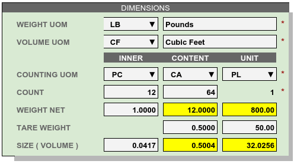
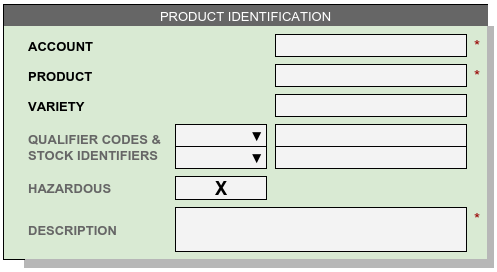
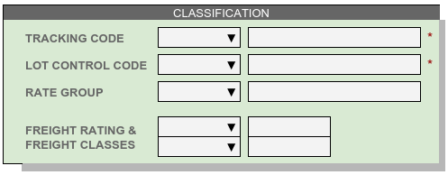
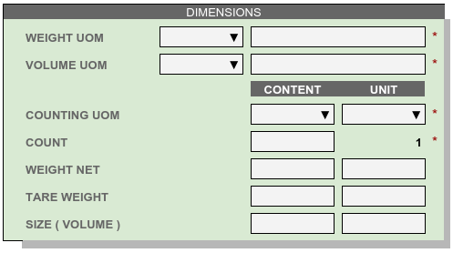

Entering and Viewing Products¶
Product Setup¶
Entries for product records are grouped into the following five sections:
- PRODUCT IDENTIFICATION
- CLASSIFICATION
- DIMENSIONS
- LOCATOR CONTROLS
- NOTES AND MESSAGES
In each section, a rule line separates basic mode entries (above the line) from advanced entries (below the rule). The sections for LOCATOR CONTROLS and NOTES AND MESSAGES are available in advanced mode only.
Product Identification¶

Basic Entries:¶
Account: Each product must be associated with an account. For private warehousing, this could be a department identifier or similar entry.
Product: A single alphanumeric entry will identify each tracked product. This entry should be used in reporting with the customer as well as in shipping and receiving documentation.
Variety: An optional adjunct of the product identifier can be used to distinguish between variants of a product which are reported together.
Stock Numbers: Each product may have several auxiliary identifiers such as a buyer code, UPC code, SKU number, and the like. These entries require qualifiers to categorize the associated identifiers.
Hazardous must be checked if a product requires DOT HAZMAT labeling.
Warning
Checking Hazard requires the Proper Shipping Name. In basic mode, a Hazard check will produce the warning message, This feature is available only in advanced mode.
Description text appears on shipping documents and other forms which members of the public are likely to read. Characters used in the description are not limited. Individual description words are indexed for searching products.
Advanced Entries:¶
- Packaging description spells out distinctive aspects of a particular product or variety. For example, “24/12 oz. cans” versus “6/48 oz. cans,” where either description represents a case with 288 ounces of product.
- Shipping Name is an alternative description specific to shipping documentation. This entry is required for hazardous materials.
Product Classification¶

Basic Entries¶
Tracking Code Determines whether inventory balances are presented by by product only (P), or separated into lots (C), or tracked by individual handling units (U).
Product inventory which is not broken down into lots is referred to as fungible. Fungible bulk products (unit UOM = BN) track inventory by location; non-fungible inventory is tracked by location and lot.
Lot Control Code specifies which piece of information to use for a lot number. Other numbers tied to a lot or shipment should be included in receiving descriptions, or tracked with individual units.
Rate Group identifies a set of rate records used in calculating the storage and handling fees for (a group of) products.
Freight Class specifies the classification system and transportation rating for a product. Classification systems include TL, LTL, and NMFC.
Carriers consider shipment bulk density, product durability, temperature control, and other factors when assigning a rate, but TL and LTL classes refer to density only. Carrier contracts may also specify a freight class, as when a carrier agrees to a single transportation rate for Freight All Kinds (FAK).
Advanced Entries¶
- Declared Value specifies the loss coverage per unit of product a customer requests for his goods under warehouse responsibility. Leave this entry blank when an account accepts the warehouse standard limitation of liability.
- Unit Cost or price is used to calculate rates for charges related to sales pricing.
- Grouping Code lists and values are optional assignment codes for products.
Product Dimensions¶

Basic Entries¶
UOM: Each inventory level in a product SKU has a Unit Of Measure (UOM). For example, an item might come with 12 blister-pack eaches (EA) packed in each case (CA), and 64 cases stack on a pallet (PL). Then UOMs for the product would be INNER=EA, CONTENT=CA, and UNIT=PL.
Tip
INNER UOM is optional in advanced mode, and if open-case picking will not happen, it should be left blank. Other entries in the INNER column are prohibited when the INNER UOM is blank.
Count represents the standard number of pieces which make up the next larger unit of inventory. In the previous example, a count of 12 blister-pack eaches make up one case, and a count of 64 cases comprise a pallet unit.
Weight: The weight of an inner piece, times the inner count, should equal the weight net of a content container. The weights (Net + Tare) of a content container times the content count should equal the weight net of a unit.
Tare Weight entries represent the extra packaging weight of content containers and shipping units.
Size tracks the volume of a piece or a container. Liquid sizes may be stated in gallons or liters, while dry sizes are usually expressed in cubic feet or cubic meters.
Advanced Entries¶
- Unit Stack determines the usage of location stack height. When a product is stored to a location, the minimum of the product’s unit stacking and the location’s stack height limit is used to calculate the location capacity.
- Content Long, Content Wide, and Content High are used when shipping via package carrier, where the carton dimensions are required.
Dimension Example¶
Calculated default values are highlighted in the Dimensions example figure. The calculations and analysis of units is shown below.
| Default Entry | Calculation |
|---|---|
| Content Weight | 12 X 1.0 = 12.0
(PC/CA) X (LB/PC) = (LB/CA)
|
| Content Size | 12 X 0.0417 = 0.5004
(PC/CA) X (CF/PC) = (CF/CA)
|
| Unit Weight | 64 X (12.00 + 0.50) = 800.00
(CA/PL) X (LB/CA) = (LB/PL)
|
| Unit Size | 64 X 0.5004 = 32.0256
(CA/PL) X (CF/CA) = (CF/PL)
|
Locator Controls¶

- A-B-C Turn Rate, or product velocity, describes how quickly products move through the warehouse.
- Unit Mixing indicates whether other products (for the same account) may be stored on the same pallet unit, or content of other lots.
- Storage Zone describes the warehouse area used to store this product. This entry could be a storage specification such as Dry/Cooler/Freezer, or it could refer to a warehouse area dedicated to the product’s account.
- Pick Line Slot specifies a location for picking individual pieces of a product.
Notes and Messages¶

Note
The entirety of LOCATOR CONTROLS and NOTES AND MESSAGES are part of advanced mode.
Using Basic Mode¶
The nature of web pages makes data entry difficult for large forms, and this is particularly a problem on hand-held devices. Basic mode exists to reduce page sizes to a minimum while providing all commonly used features.
Basic mode displays only three form sections, and these sections are reduced to the components displayed below.
  